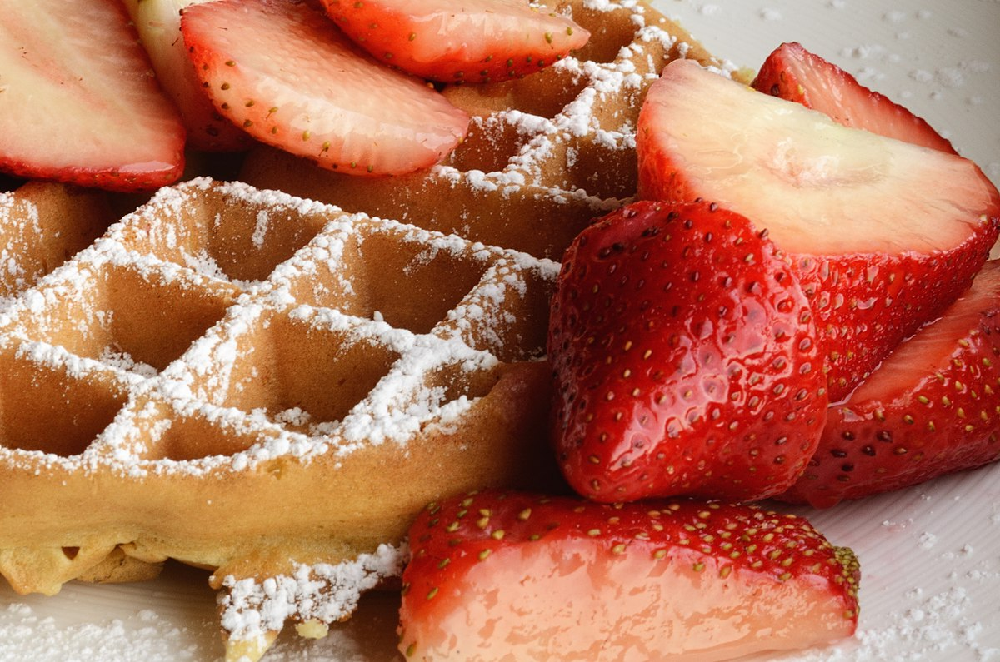
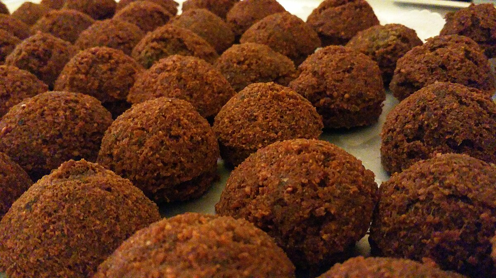
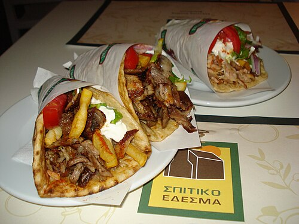
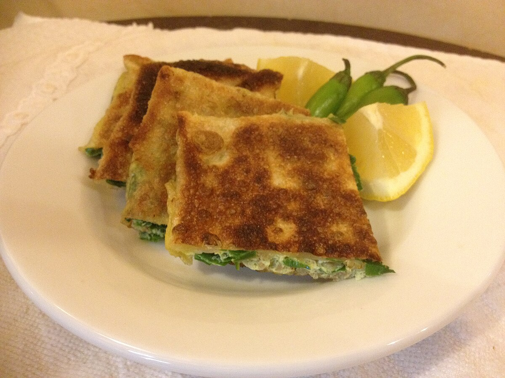
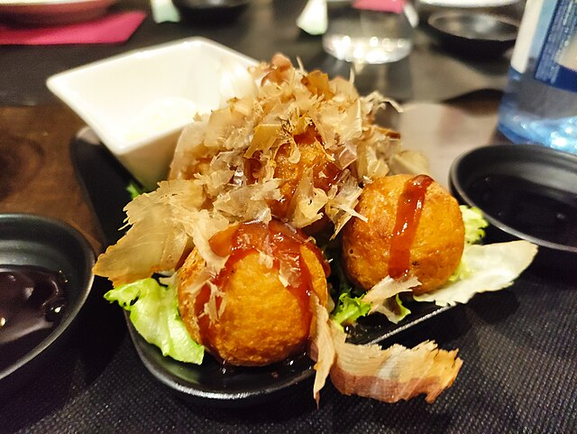

1. Arepa

Description
Arepas are round, flat cornmeal cakes that are a staple in Venezuelan and Colombian cuisine. They can be grilled, baked, fried, or steamed, and are enjoyed for breakfast, lunch, or dinner. Their versatility makes them a national symbol of comfort food, often split open and stuffed with savory or sweet fillings.
Common Ingredients
- Cornmeal
- Water
- Salt
- Oil or butter
- Fillings: cheese / shredded beef / chicken / avocado / eggs / beans
Preparation
A dough is formed by mixing cornmeal with water and salt. The dough is shaped into disks and cooked on a hot griddle or baked until golden brown. Once cooked, they are sliced open and filled with ingredients ranging from melted cheese to seasoned meats, or simply served plain with butter.
2. Beigian Waffle
Description
Belgian waffles are famous for their deep pockets and fluffy texture, often eaten as breakfast or a dessert. Unlike regular waffles, Belgian waffles are typically thicker and lighter due to yeast or whipped egg whites in the batter. They’re usually served with sweet toppings, but savory variations exist.
Common Ingredients
- Flour
- Eggs
- Milk
- Sugar
- Butter
- Baking powder or yeast
- Vanilla extract
Preparation
Batter is made by whisking eggs, milk, flour, sugar, and leavening agents. For yeast waffles, the batter is left to rise before cooking. The mixture is poured into a waffle iron, which shapes and crisps the batter. Once golden, waffles are topped with whipped cream, fruits, chocolate sauce, or syrup.
3. Coxinha

Description
Coxinha is a beloved Brazilian street snack shaped like a chicken drumstick. The name means “little thigh” in Portuguese. Its crisp golden crust and creamy chicken filling make it a popular party food and grab-and-go snack.
Common Ingredients
- Shredded chicken breast
- Cream cheese or Brazilian soft cheese
- Onion, garlic, parsley
- Chicken broth
- Wheat flour
- Eggs and breadcrumbs
- Oil
Preparation
Flour is cooked with chicken broth and butter until a smooth dough forms. The dough is wrapped around a filling of seasoned shredded chicken mixed with cheese, shaped into teardrops, breaded, and deep-fried until golden. The result is crispy outside and creamy inside.
4. Falafel
Description
Falafel is a Middle Eastern vegetarian dish consisting of deep-fried balls or patties made from ground chickpeas or fava beans. They are often eaten in pita bread or flatbreads with vegetables, pickles, and sauces. Nutritious, affordable, and filling, falafel has become popular worldwide.
Common Ingredients
- Dried chickpeas or fava beans (soaked overnight)
- Onion and garlic
- Fresh herbs: parsley, cilantro, dill
- Spices: cumin, coriander, cayenne
- Flour or baking powder (binding)
- Oil
Preparation
Soaked legumes are ground with herbs, onion, and spices into a coarse paste. The mixture is shaped into balls or patties and deep-fried until crisp and golden. Falafel is usually served in pita with salad, tahini, or hummus, making it a balanced vegetarian meal.
5. Fish and Chips

Description
Fish and chips is one of Britain’s most iconic dishes, traditionally wrapped in paper and eaten as street food. The dish combines crispy battered fish with golden fries, often served with mushy peas, salt, and malt vinegar.
Common Ingredients
- White fish fillets (cod, haddock, pollock)
- Flour, baking powder, and beer or soda water (for batter)
- Potatoes (for chips)
- Salt and vinegar
- Oil
Preparation
Fish fillets are dipped into a light batter and deep-fried until crispy. Potatoes are cut into thick strips, fried until golden, and served alongside. Traditionally eaten hot and fresh, fish and chips are a symbol of British culinary heritage.
6. Gyros
Description
Gyros are a popular Greek street food similar to shawarma, consisting of seasoned meat roasted on a vertical rotisserie. Slices of meat are served in pita bread with fresh vegetables and creamy tzatziki sauce. The name “gyro” comes from the Greek word for “turn,” referring to the spinning rotisserie.
Common Ingredients
- Pork, chicken, or lamb (sometimes beef)
- Olive oil, lemon juice, garlic, oregano
- Pita bread
- Tomatoes, onions, lettuce
- Tzatziki (yogurt, cucumber, garlic, dill)
Preparation
Meat is marinated with herbs and olive oil, then roasted on a vertical spit. Thin slices are shaved off and wrapped in warm pita bread along with vegetables and tzatziki sauce, creating a filling handheld meal.
7. Hot Dog

Description
Hot dogs are sausages served inside soft buns, widely recognized as an American fast food icon, especially at barbecues, ballparks, and street vendors. The toppings vary greatly by region, from classic mustard to chili, cheese, or sauerkraut.
Common Ingredients
- Hot dog sausage (beef, pork, or chicken)
- Hot dog buns
- Mustard, ketchup
- Onions, relish, sauerkraut, chili, cheese (regional toppings)
Preparation
Sausages are boiled, steamed, or grilled. They are placed in a slit bun and topped with condiments and garnishes. Street vendors often keep them hot in steamers for quick serving.
8. Lamington

Description
Lamingtons are small square sponge cakes coated in chocolate and rolled in desiccated coconut. They’re a national dessert in Australia and often enjoyed with tea or coffee. Some versions are filled with cream or jam.
Common Ingredients
- Sponge or butter cake
- Chocolate icing (cocoa, icing sugar, butter, milk)
- Desiccated coconut
- Optional: jam or whipped cream
Preparation
Sponge cake is cut into squares, dipped into chocolate icing, then rolled in coconut flakes. They are allowed to set, sometimes sliced in half and filled with cream or raspberry jam.
9. Martabak
Description
Martabak is a popular Indonesian street food that comes in two styles: savory (Martabak Telur) and sweet (Martabak Manis). Savory martabak is a stuffed pancake with egg and meat, while the sweet version is a thick, fluffy pancake loaded with indulgent fillings.
Common Ingredients
- Dough: flour, water, eggs, yeast
- Savory filling:
- Minced meat
- Eggs
- Onions
- Scallions
- Spices
- Sweet filling:
- Chocolate
- Condensed milk
- Peanuts
- Cheese
- Sesame seeds
Preparation
Savory martabak dough is stretched thin, filled with eggs and spiced meat, folded, and pan-fried until golden. Sweet martabak batter is cooked into a thick pancake and topped generously with butter, condensed milk, and fillings before being folded in half.
10. Meat Pie

Description
Meat pie is A savory pastry filled with minced or chunky meat in gravy. Popular in both Britain and Australia, meat pies are a handheld comfort food sold in bakeries, cafes, and sports stadiums.
Common Ingredients
- Pastry dough (shortcrust or puff pastry)
- Beef, lamb, or chicken
- Onion and garlic
- Stock or gravy
- Pepper and herbs
Preparation
Pastry dough is rolled out and used to line a pie tin. The filling of meat and gravy is added, topped with another pastry layer, and baked until golden. In Australia, meat pies are often eaten with tomato sauce (ketchup).
11. Pad Thai

Description
Pad Thai is Thailand’s most famous stir-fried noodle dish, balancing sweet, sour, salty, and spicy flavors. It’s often cooked quickly in street food stalls over high heat in a wok, making it aromatic and flavorful. Pad Thai is considered both a national dish and a comfort food.
Common Ingredients
- Rice noodles
- Eggs
- Shrimp, chicken or tofu
- Bean sprouts, scallions and garlic chives
- Crushed peanuts
- Tamarind paste, fish sauce, palm sugar and lime juice
- Chili flakes
Preparation
Rice noodles are soaked until soft, then stir-fried with eggs, tofu or meat, and aromatics. A sauce made of tamarind, fish sauce, and sugar coats the noodles, giving them a glossy and flavorful finish. Finally, bean sprouts, chives, and peanuts are added, and the dish is served with lime wedges for extra tang.
12. Pizza

Description
Pizza is one of the most globally beloved foods, originating from Naples, Italy. It consists of a round, flat dough topped with tomato sauce, cheese, and various toppings, baked in a hot oven. Today, countless regional and international variations exist, from thin-crust Neapolitan pizza to deep-dish Chicago pizza.
Common Ingredients
- Pizza dough (flour, yeast, water, olive oil)
- Tomato sauce (tomatoes, garlic, herbs)
- Mozzarella cheese
- Toppings: pepperoni, mushrooms, onions, peppers, olives, basil, anchovies
Preparation
The dough is kneaded and left to rise, then stretched into a thin base. Tomato sauce and cheese are spread over, followed by toppings. The pizza is baked at high heat—traditionally in a wood-fired oven—until the crust is crisp and the cheese bubbly.
13. Suya

Description
Suya is a popular Nigerian street food made of thinly sliced, skewered meat coated with a flavorful peanut spice blend and grilled over open flames. It is especially common in roadside stalls and night markets, often eaten with sliced onions, tomatoes, and flatbreads.
Common Ingredients
- Beef, chicken, or goat meat (thin slices)
- Suya spice mix (ground roasted peanuts, cayenne, ginger, paprika, bouillon)
- Oil or butter
- Raw onions, tomatoes, and cucumbers (side garnishes)
Preparation
Meat slices are marinated with the peanut spice mix and skewered. The skewers are grilled over hot charcoal until smoky and slightly charred. Suya is typically served with sliced onions and sometimes wrapped in flatbread or eaten with spicy sauces.
14. Taco

Description
Tacos are a cornerstone of Mexican cuisine—small corn or flour tortillas filled with savory ingredients, folded and eaten by hand. Street vendors serve them with a wide range of fillings, from meats to vegetarian options, always garnished with salsa, onions, and cilantro.
Common Ingredients
- Corn or flour tortillas
- Meat (beef, pork, chicken, fish) or beans
- Onions, cilantro, lettuce and tomatoes
- Salsa, guacamole, or lime wedges
- Cheese (optional)
Preparation
Tortillas are warmed on a griddle, then filled with meat or beans. Toppings such as onions, cilantro, and salsa are added. Popular variations include tacos al pastor (marinated pork cooked on a vertical spit) and fish tacos with crispy fried fish.
15. Takoyaki
Description
Takoyaki are Japanese street snacks—round, golden-brown balls made of wheat batter filled with diced octopus. They are cooked in special takoyaki pans with half-sphere molds, giving them their distinctive shape. Popular at festivals, they’re served hot with savory sauces and toppings.
Common Ingredients
- Wheat flour batter (flour, dashi stock, egg)
- Octopus pieces
- Pickled ginger, green onions
- Tempura scraps (tenkasu)
- Takoyaki sauce (sweet-savory)
- Mayonnaise, bonito flakes and seaweed powder
Preparation
The batter is poured into hot takoyaki molds, partially filled with octopus and toppings, then flipped with skewers to form round balls. They are cooked until golden on the outside and soft inside, then topped with sauce, mayonnaise, and bonito flakes that dance with the heat.
16. Tteokbokki

Description
Tteokbokki is a beloved Korean street food featuring chewy rice cakes in a bright red, spicy-sweet sauce. It’s sold at street stalls and comfort food restaurants, often paired with fish cakes, boiled eggs, and vegetables. Its bold flavors make it a popular snack during cold weather.
Common Ingredients
- Korean rice cakes (tteok)
- Gochujang (Korean chili paste)
- Gochugaru (chili flakes)
- Fish cakes (eomuk)
- Garlic, soy sauce and sugar
- Boiled eggs, scallions and sesame seeds
Preparation
Rice cakes are simmered in a sauce made of gochujang, soy sauce, and sugar until soft and chewy. Fish cakes and vegetables are added, and the mixture thickens into a spicy-sweet glaze. The dish is garnished with sesame seeds and scallions before serving hot.